ELEC
electronics primer
.:A Small Electronics Primer:.
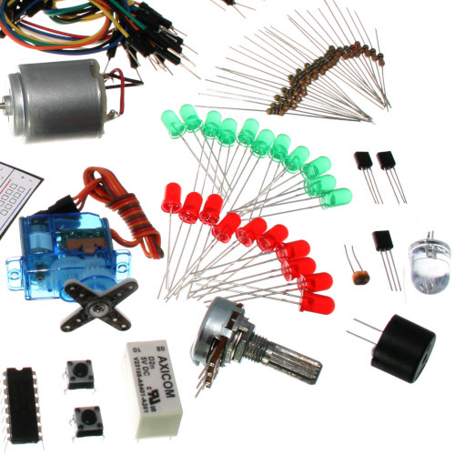Electronics in Brief
No previous electronic experience is required to have fun with this kit. Here are a few details about each component to make identifying, and perhaps understanding them, a bit easier. If at any point you are worried about how a component is used or why it's not working, the internet offers a treasure trove of advice. We can also be contacted at info@robotgames.com or questions can be posted to the issues for our github repository.
Component Details
LED
(Light Emitting Diode)
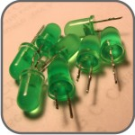What it Does:
Emits light when a small current is passed through it. (only in one direction)
Identifying:
Looks like a mini light bulb.
No. of Leads:
2 (one longer, this one connects to positive)
Things to watch out for:
- Will only work in one direction
- Requires a current limiting resistor
More details on Wikipedia:
Diode
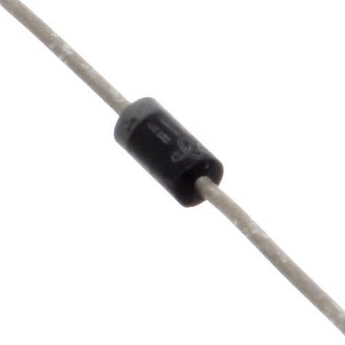What it Does:
The electronic equivalent of a one way valve. Allowing current to flow in one direction but not the other.
Identifying:
Usually a cylinder with wires extending from either end. (and an off centre line indicating polarity)
No. of Leads:
2
Things to watch out for:
- Will only work in one direction (current will flow if end with the line is connected to ground)
More details on Wikipedia:
Resistor
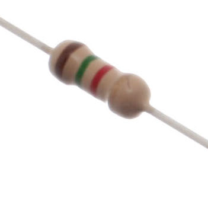What it Does:
Restricts the amount of current that can flow through a circuit.
Identifying:
Cylinder with wires extending from either end. The value is displayed using a colour coding system (for details see the end of this page)
No. of Leads:
2
Things to watch out for:
- Easy to grab the wrong value (double check the colours before using)
More details on Wikipedia:
Transistor
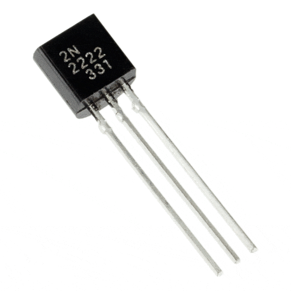What it Does:
Uses a small current to switch or amplify a much larger current.
Identifying:
Comes in many different packages but you can read the part number off the package. (P2N2222AG in this kit and find a datasheet online)
No. of Leads:
3 (Base, Collector, Emitter)
Things to watch out for:
- Plugging in the right way round (also a current limiting resistor is often needed on the base pin)
More details on Wikipedia:
Hobby Servo
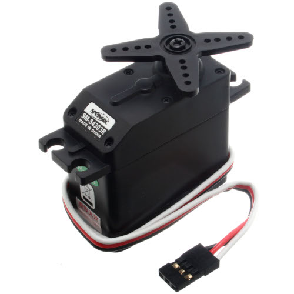What it Does:
Takes a timed pulse and converts it into an angular position of the output shaft.
Identifying:
A plastic box with 3 wires coming out one side and a shaft with a plastic horn out the top.
No. of Leads:
3
Things to watch out for:
- The plug is not polarized so make sure it is plugged in the right way
More details on Wikipedia:
Extra information here as well.
DC Motor
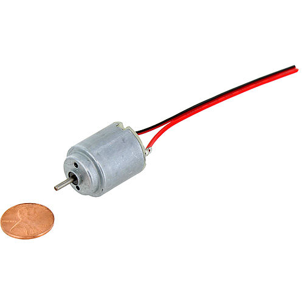What it Does:
Spins when a current is passed through it.
Identifying:
This one is easy, it looks like a motor. Usually a cylinder with a shaft coming out of one end.
No. of Leads:
2
Things to watch out for:
- Using a transistor or relay that is rated for the size of motor you're using.
More details on Wikipedia:
Piezo Element
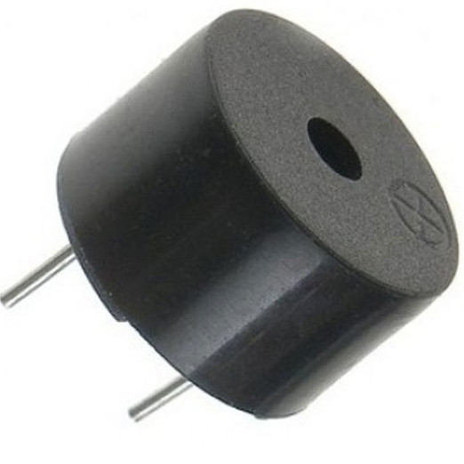What it Does:
A pulse of current will cause it to click. A stream of pulses will cause it to emit a tone.
Identifying:
In this kit it comes in a little black barrel, but sometimes they are just a gold disc.
No. of Leads:
2
Things to watch out for:
- Difficult to misuse
More details on Wikipedia:
IC
(Integrated Circuit)
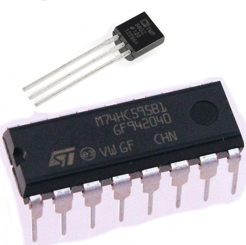What it Does:
Combines any range of complicated electronics inside an easy to use package.
Identifying:
The part ID is written on the outside of the package. (this sometimes requires a lot of light or a magnifying glass to read).
No. of Leads:
2 - 100s (in this kit there is one with 3 (TMP36) and one with 16 (74HC595)
Things to watch out for:
- Proper orientation. (look for marks showing pin 1)
More details on Wikipedia:
Pushbutton
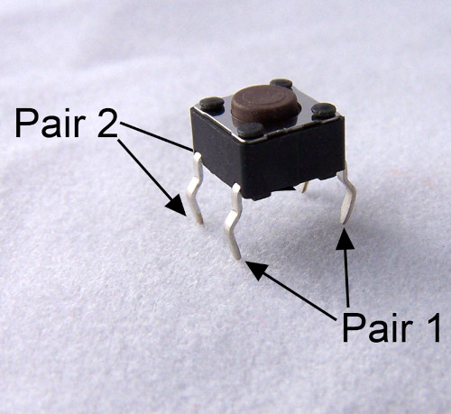What it Does:
Completes a circuit when it is pressed.
Identifying:
A little square with leads out the bottom and a button on the top.
No. of Leads:
4
Things to watch out for:
- These are almost square so can be inserted 90 degrees off angle
More details on Wikipedia:
Potentiometer
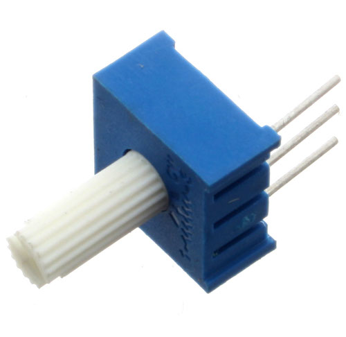What it Does:
Produces a variable resistance dependant on the angular position of the shaft.
Identifying:
They can be packaged in many different form factors, look for a dial to identify.
No. of Leads:
3
Things to watch out for:
- Accidentally buying logarithmic scale
More details on Wikipedia:
Photo Resistor
(Light Dependent Resistor)
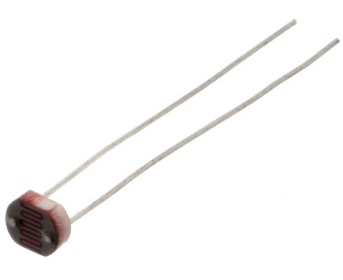What it Does:
Produces a variable resistance dependant on the amount of incident light.
Identifying:
Usually a little disk with a clear top and a curvy line underneath.
No. of Leads:
2
Things to watch out for:
- Remember it needs to be in a voltage divider before it provides a useful input
More details on Wikipedia:
Resistor Colour Codes
Examples:
- 560 ohms (560Ω)
- green-blue-brown (56 x 10^1)
- green-blue-black-black (560 x 10^0)
- 2,200 ohms (2.2kΩ)
- red-red-red (22 x 10^2)
- red-red-black-brown (220 x 10^1)
- 10,000 ohms (10kΩ)
- brown-black-orange (10 x 10^3)
- brown-black-black-red (100 & 10^2)
- 0 - Black
- 1 - Brown
- 2 - Red
- 3 - Orange
- 4 - Yellow
- 5 - Green
- 6 - Blue
- 7 - Purple
- 8 - Grey
- 9 - White
- 20% - none
- 10% - silver
- 50% - gold
Lead Clipping
Some components in this kit come with very long wire leads. To make them more compatible with a breadboard a couple of changes are required.
LEDs:
Clip the leads so the long lead is ~10mm (3/8"") long and the short one is ~7mm (9/32"").
Resistors:
Bend the leads down so they are 90 degrees to the cylinder. Then snip them so they are ~6mm (1/4"") long.
Other Components:
Other components may need clipping. Use your discretion when doing so.